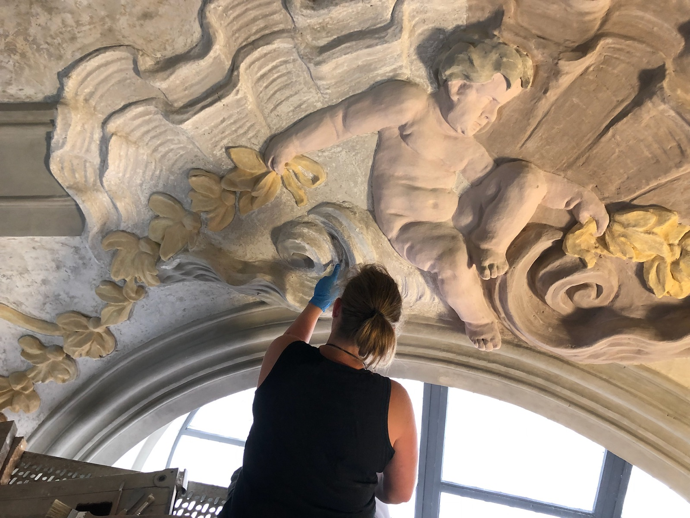

Kajetaner-
kirche
Restaurierung · 2021 · Salzburg
Die Kajetanerkirche zählt zu den bedeutendsten Barockbauten der Salzburger Altstadt — und damit zu einem UNESCO-Welterbe, das besondere Sorgfalt erfordert. Die Fassade zeigte nach drei Jahrhunderten erhebliche Schäden: ausgewaschene Putzflächen, Risse im Mauerwerk, verblasste Originalfarbigkeit und instabile Steingesimse.
Die Aufgabe war keine Rekonstruktion, sondern eine wissenschaftlich fundierte Instandsetzung mit dem Ziel, die bauliche Substanz zu sichern und die historische Erscheinung behutsam zurückzugewinnen. Enge Abstimmung mit dem Bundesdenkmalamt Salzburg begleitete jeden Schritt des zweijährigen Prozesses.
Restauratoren analysierten mittels Stratigraphie die originalen Farbschichten. Der wiederhergestellte Ockerton entspricht dem Befund aus dem frühen 18. Jahrhundert. Schadhafte Putzflächen wurden mit historisch kompatiblen Mörteln ergänzt, Steinelemente konsolidiert und neu verfugt. Metallische Abdeckungen schützen die Gesimse vor künftigem Wasseraustritt.
Das Projekt verdeutlicht das Leitprinzip des Büros im Bereich Denkmalpflege: Eingriffe so weit wie nötig, Erhalt so weit wie möglich. Die Kirche erscheint heute im Stadtbild wieder als das, was sie immer war — ein selbstverständlicher, ruhiger Fixpunkt inmitten des Treibens.